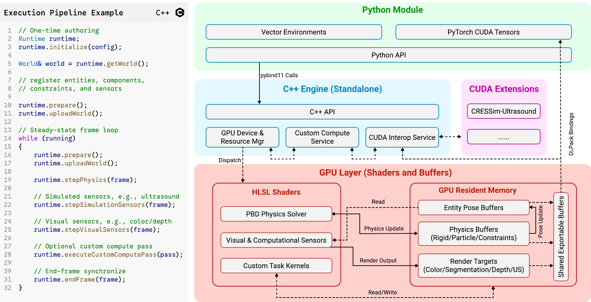

System Overview#
CRESSim-Neo is designed as a foundation for surgical robotics simulation, synthetic data generation, and robot learning. It combines the modeling flexibility required by surgical scenes with the scalability needed for batched simulation and GPU-resident learning workflows.
{kind=link}

Framework overview of CRESSim-Neo and example code.#
Design objectives#
The system design is motivated by two core objectives.
Multi-Domain Physics and Sensing: Surgical workloads require the simulation of rigid instruments, deformable tissues, fluids, and strand-like structures. Furthermore, the simulator should unify these physical domains with multi-modal observation, including color, depth, semantic segmentation, and simulated ultrasound.
GPU-Resident Dataflow: Most computational stages should remain GPU-resident. This includes not only the physics solver and graphics renderer, but also user-defined computations such as observation generation, reward calculation, and post-processing or randomization. Therefore, interfaces for custom GPU compute, as well as access to internal physics and render-state buffers, must be included.
Additional considerations include (1) cross-operating-system and cross-GPU support, (2) modern graphics API usage, (3) cross-API shading language portability, and (4) graphics and compute API interoperability.
System architecture#
CRESSim-Neo is implemented as a standalone C++ simulation engine with a low-level GPU execution layer and a high-level Python binding layer.
C++ Engine Orchestration: This foundational runtime implements the public scene-authoring API, manages the entity-component registry, and schedules resource uploads (meshes, textures, sensors) and GPU graphics/compute work. The C++ runtime is fully standalone and can execute independently of any Python bindings.
GPU Execution: The computational backend is built with Diligent Engine and performs all heavy physics and rendering calculations on the GPU. Vulkan and Direct3D 12 (D3D12) are the two supported graphics API backends. The PBD solvers, rendering pipelines, and visual/simulation sensors are implemented in HLSL and compiled to compute and graphics shaders. Custom task logic, such as reward calculation, runs in dispatchable HLSL compute kernels so that performance-critical work also stays on the device.
Python Extension: A lightweight interface layer built on top of the C++ API using pybind11. It exposes the engine runtime API to Python scripts and integrates a Vulkan-CUDA (or D3D12-CUDA, depending on the backend choice) interop layer using DLPack. This allows Python-based learning frameworks, such as PyTorch, to acquire direct, zero-copy access to GPU-resident simulation and sensor buffers.